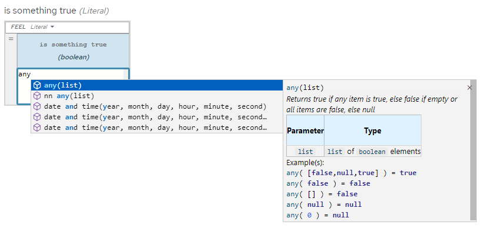
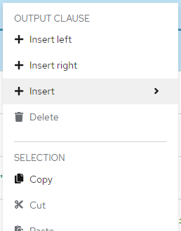
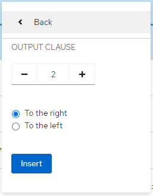

DMN boxed expression editor improvements
We are happy to announce another set of improvements to our boxed expression editor. As we unveiled recently in the article, we try to improve the boxed expression editor continuously. Described features from this article will be available with kie-tools 0.31.0 release. So let’s have a look at them in more detail.
Autocompletion
Autocompletion appears automatically as the user starts to type the text of the expression. These autocompletion are filtered to match the typed text. As an alternative, the user can invoke autocompletion simply by pressing Ctrl + Spacebar (the shortcut may differ on various platforms).
Before and Now
Older versions of the DMN boxed expression editor suggested a raw list of available FEEL functions to the user. We can understand raw as missing any documentation of the function.
However now, thanks to Yeser, we added documentation for each available function containing details of parameters and returned value.

Rows and columns insertion
Row or column insertion is an operation a DMN modeler user executes daily. It can be done using an inline plus icon or context menu, that is invoked by a right mouse button click, from most of the boxed expression editor cells.
Before and Now
Older versions of the DMN boxed expression editor allowed single row or column insertion per time. Creation of large expressions this way is slow, not efficient enough.
However now, thanks to Daniel, users are able to insert as many columns or rows per time as they want. Well, we actually set an upper boundary of 500 items, we believe this boundary is sufficient.


These new boxed expression editor improvements will be available soon in the next release. If you spot any issue feel free to contact us on zulip or report an issue on GitHub.